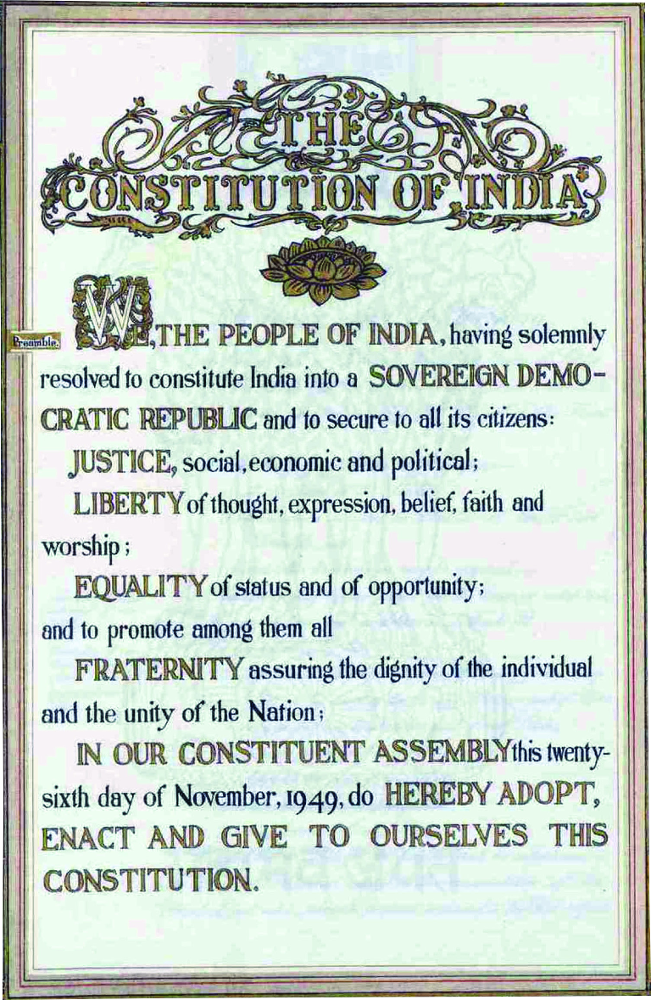

Honestly this post might feel boredom for those who are not interested about Indian Constitution,
& Governance -- stuff. These are my writings that reflect my understanding & interpretation on
what i have & how much i have gone far enough to learn about the constitution of India itself.
WHY AM I INTERESTED ?
For those who ask this question, just think about the environment you live in, just think where
do we live ? how we live ? why do we fear state & government in general ? why do we transformed
ourselves into beings of consumerism ? why do we always expect somebody else to make a move ?
why do we fear police ? why people are beaten & tortuned brutally by them ? why human rights
commission have so much complaints lodged against impunity ? why do we constantly chase "money" ?
why are we so ignorant about who to contact when we end up with some social problem ? why our
representatives cannot function as we intend to ? why no matter what gov. comes to manage governance,
there is no improvement in people life & well being ? why we dont yet have free education ? why
students attempt suicides in our institutions ? why do farmers die everyday ? why are we silent
and keep on going to earn wages, despite all these situations ?
JUST ASK YOURSELVES !
We are atleast gauranted to create a thought thread about such questions -- atleast in our mind for now.
Even if constitution could not answer all the questions that are brewing in our minds directly, it has
considerable relationship and influence with the social, economic, & political environemnts which the
society is living on. I am basically interested in deconstructing such relationships, and in the triumph
i desire to understand the nature of each sub system as much as i can digest - which keeps me rational,
instead of confusing & feeding myself emotionally.
We believe that it is the inalienable right of the Indian people, as of any other people, to have freedom
and to enjoy the fruits of their toil and have the necessities of life, so that they may have full opportunities
of growth. We believe also that if any government deprives a people of these rights and oppresses them the
people have a further right to alter it or to abolish it. The British Government in India has not only deprived
the Indian people of their freedom but has based itself on the exploitation of the masses, and has ruined India
economically, politically, culturally, and spiritually. We believe, therefore, that India must sever the British
connection and attain Purna Swaraj, or complete independence.
India has been ruined economically. The revenue derived from our people is out of all proportion to our income.
Our average income is seven pice (There were 4 pice in an anna, and 16 annas in a rupee) per day, and of the
heavy taxes we pay, 20 per cent are raised from the land revenue derived from the peasantry and 3 per cent from
the salt tax, which falls most heavily on the poor.
Village industries, such as hand-spinning, have been destroyed, leaving the peasantry idle for at least four
months in the year, and dulling their intellect for want of handicrafts, and nothing has been substituted, as
in other countries, for the crafts thus destroyed.
Customs and currency have been so manipulated as to heap further burdens on the peasantry. British manufactured
goods constitute the bulk of our imports. Customs duties betray clear partiality for British manufactures, and
revenue from them is used not to lessen the burden on the masses but for sustaining a highly extravagant
administration. Still more arbitrary has been the manipulation of the exchange ration, which has resulted in
millions being drained away from the country.
Politically, India's status has never been so reduced as under the British regime. No reforms have given real
political power to the people. The tallest of us have to bend before foreign authority. The rights of free expression
of opinion and free association have been denied to us, and many of our countrymen are compelled to live in exile
abroad and cannot return to their homes. All administrative talent is killed, and the masses have to be satisfied
with petty village offices and clerkships.
Culturally, the system of education has torn us from our moorings, and our training has made us hug the very chains
that bind us. Spiritually, compulsory disarmament has made us unmanly, and the presence of an alien army
of occupation, employed with deadly effect to crush in us the spirit of resistance, has made us think that we cannot look
after ourselves or put up a defense against foreign aggression, or even defend our homes and families from attacks of thieves,
robbers, and miscreants.
We hold it to be a crime against man and God to submit any longer to a rule that has caused this fourfold disaster
to our country. We recognize, however, that the most effective way of gaining our freedom is through nonviolence.
We will therefore prepare ourselves by withdrawing, so far as we can, all voluntary association from the British
Government, and will prepare for civil disobedience, including nonpayment of taxes. We are convinced that if we can
but withdraw our voluntary held and stop payment of taxes without doing violence, even under provocation, the end of
this inhuman rule is assured. We therefore hereby solemnly resolve to carry out the Congress instructions issued from
time to time for the purpose of establishing Purna Swaraj.
- Purna Swaraj Resolution ( 1929 - 1930 )
WE, THE PEOPLE OF INDIA, having solemnly resolved to constitute India into a : SOVEREIGN + SOCIALIST +
SECULAR + DEMOCRATIC + REPUBLIC and to secure to all its citizens:
JUSTICE, social, economic and political;
LIBERTY of thought, expression, belief, faith and worship;
EQUALITY of status and of opportunity; and to promote among them all
FRATERNITY assuring the dignity of the individual and the unity and integrity of the Nation;
IN OUR CONSTITUENT ASSEMBLY this twenty-sixth day of November, 1949, do HEREBY ADOPT, ENACT AND GIVE TO
OURSELVES THIS CONSTITUTION.

Let's Deconstruct it :
WE ?
People of India - in its territory completely including everyone with equality - as a collective.
This representation rises to form nation of India.
SOVEREIGN ?
A government which exercises de facto administrative control over a country and is not
subordinate to any other government in that country or a foreign sovereign state.
are we still a sovereign ?
yes, it seems to be !
SOCIALIST ?
A range of economic and social systems characterised by social ownership and democratic
control of the means of production; as well as the political ideologies, theories,
and movements that aim to establish them. Social ownership may refer to forms of public,
collective, or cooperative ownership; to citizen ownership of equity; or to any combination
of these.
does our social, economic systems function in socialist form ? i doubt it !...
SECULAR ?
A state of being separate from religion, or of not being exclusively allied with or against
any particular religion. It involves the principle that government institutions and their
representatives should remain separate from religious institutions, their beliefs,
and their dignitaries.
are we secular ?
as people - we are comfortable to be secular, most of the times.
DEMOCRATIC ?
A system of government in which the citizens exercise power directly or elect representatives
from among themselves to form a governing body, such as a parliament.
is democracy functioning as people intend ? IF & only IF people stay rational, critical about governance & socio-economic-political situations.
REPUBLIC ?
A form of government in which the country is considered a "public matter" – not the private
concern or property of the rulers – and where offices of state are elected or appointed, rather
than inherited. It is a government where the head of state is not a monarch.
did we really achieved republic ? i doubt it, with rise in extreme right wing policies, oligarchy, plutocracy, technocracy, ...
DESIGN OF CONSTITUTION
Designing a document that could satisfy every citizen of a democratic society is really hard and tend to be nearly impossible.
However, not designing one is far more catastrophic rendering a society without governance. Whether a society requires a
government to manage itself, how to organize itself, with what process are all dependent upon the fundamental principles and
philosophies which the rational people believe in and frame it with proper deliberation. Thus the design of a constitutional
framework itself starts with questioning others suggestions and ideas even before testing them out.
In the case of Indian Constitution, where it is declared and believed to have life and thus termed as living document.
It simply decides the common set of rules and policies for a human being born as Indian. However, it also provides power to the
people to change the common rule set with an established process in democracy. Devicing these set of rules without Empathy
might render the constitution itself beyond repair hurting the very principles which it is fundamentally sculpted upon.
Thus designing a constitution in a democratic society is the greatest honour and greatest burden of responsibility that would
forever change the course of a nations socio-economic direction. It is a design where the assumption - everyone Indian will
accept these common set of rules. In order to make the assumption pragmatic, the set of rules must cut across the boundaries
of difference between groups of people seperated by religion, language, economic status, caste, race, etc.. It must not be a
document emphasizing the difference between people, on contrary uniting them with commonalities while encouraging diversity,
providing an autonomous way of life that enriches Liberty at individual level.
EROSION OF CONSTITUTION
It is a known fact, that any established rules, with good and progressive intentions can be eroded with a different
set of good intentions who can able to rewrite the rules of constitution through amendments. This could render the
very living dimension of constitution into a regressive and subjugative document. This indicates that the life of the
constitution depends upon what we write and edit in it.
ERODED - TIMELINE
For those who are interested in this timeline data, i have made it using JSON, and feel free to download
and share it with your peers, whenever you find it needed.
- Thanks to timelinejs team of knightlab, for creating it.